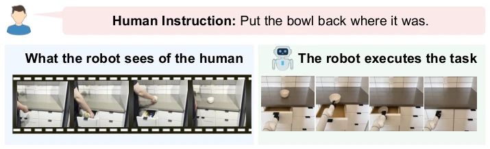
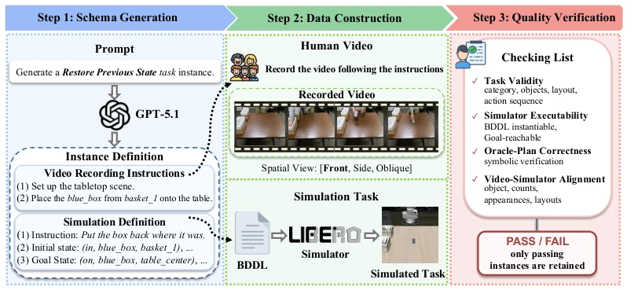
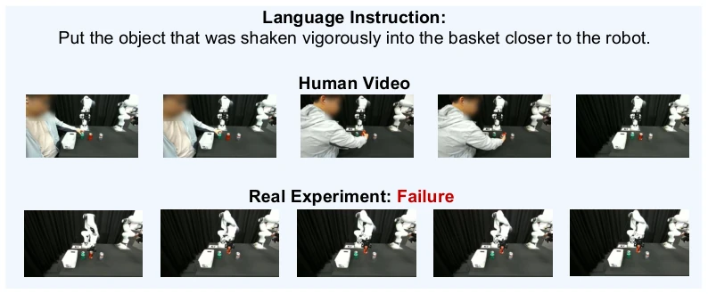
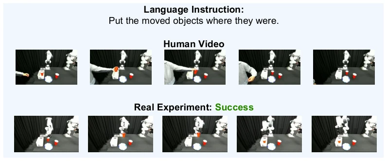
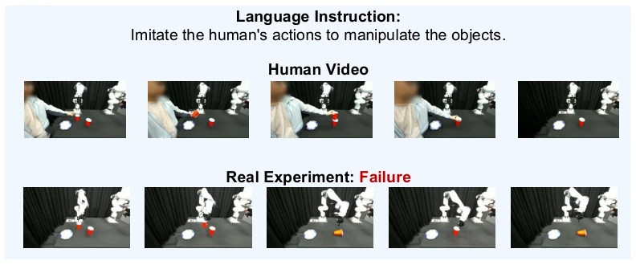
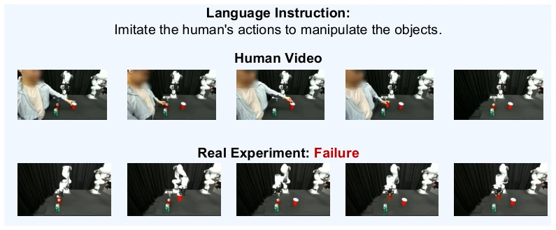
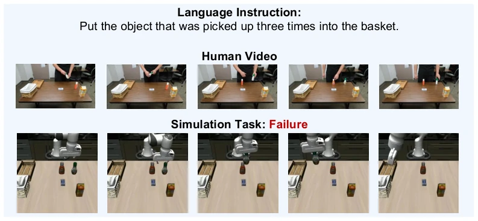
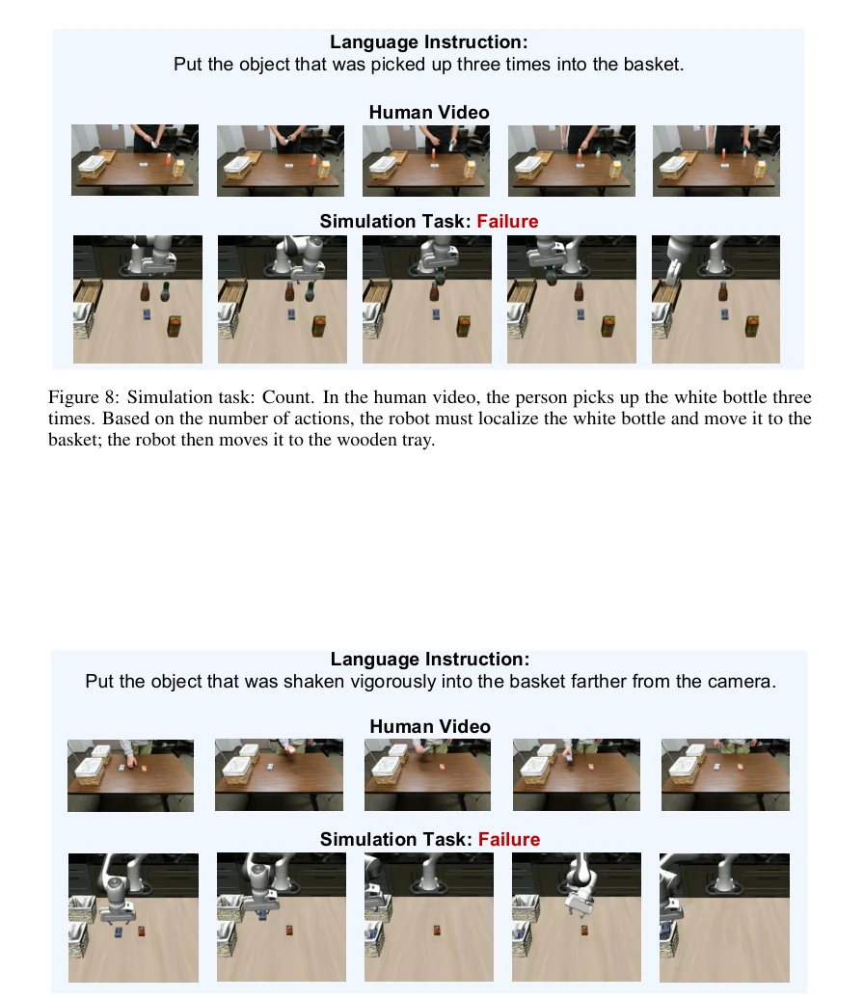
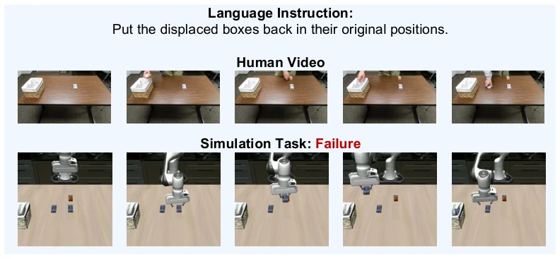
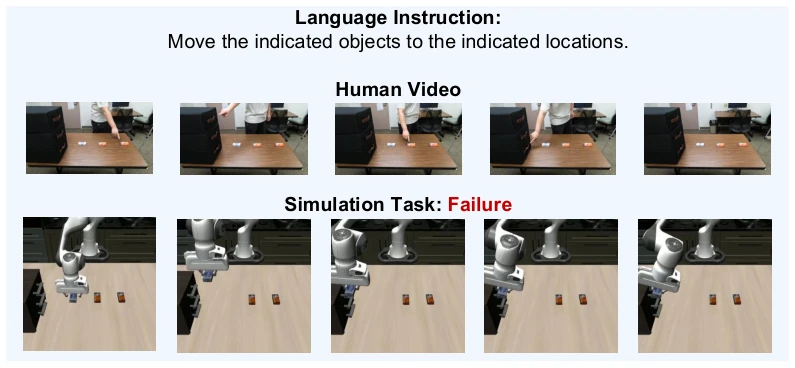

WatchAct 终于把机器人从“看图说话”拉到了“看人干活”的赛道，这步棋走得很对。毕竟家里机器人要是连人把东西放哪了都不知道，那不如当个摆件。但现实很骨感，Gemini 3.1 Pro 这种顶流模型在规划成功率上连人类零头都不到（36.8% vs 97.1%），π0.5 策略在真机上更是惨不忍睹。这 benchmark 像面照妖镜，照出了当前 VLA 模型在长程推理和物理执行上的双重残疾。虽然数据构建依赖 LLM 和人工指导，不够“野生”，但作为测试床，它确实戳中了具身智能的痛点：光有指令不够，还得懂前情提要。
WatchAct has finally shifted robots from the 'image captioning' track to the 'watching people work' track; this move is highly appropriate. After all, if a home robot does not even know where people place items, it is better suited as a mere ornament. However, reality is harsh; top-tier models like Gemini 3.1 Pro achieve less than a fraction of human planning success rates (36.8% vs 97.1%), and the π0.5 policy is even more dismal on real hardware. This benchmark acts like a mirror, revealing the dual limitations of current VLA models in long-horizon reasoning and physical execution. Although data construction relies on LLMs and human guidance, not being 'wild' enough, as a testbed, it indeed hits the pain point of embodied intelligence: instructions alone are insufficient; one must also understand the context.
Existing manipulation benchmarks such as LIBERO [7], RoboCasa [8] are mostly based on static scenes or the robot's own perspective, lacking understanding of others' behavior sequences and intentions. Although videos contain spatial layouts and object histories, existing work [12, 15] only utilizes them for demonstration imitation or memory recall, rather than as a basis for reasoning. For robots to be effective in home collaboration, they must parse events, causality, and implicit intentions within videos like humans. This paper points out that tasks such as 'putting things back in place' cannot be completed based solely on the current state; observed behavior history must be incorporated. This fills the gap between behavior perception and embodied operation.

Figure 1: WatchAct is a behavior-grounded benchmark for robotic manipulation, where the robot reasons over observed human behavior and a language instruction to perform the corresponding task.
WatchAct adopts a 'Video + Instruction + Simulation' triplet construction. The pipeline is divided into four steps: 1) LLM generates task specifications and shooting guides; 2) Humans record videos according to the guides; 3) Aligned simulation tasks are constructed based on LIBERO (including BDDL definitions); 4) Four-fold quality control (task validity, sim executability, Oracle plan correctness, video-sim alignment). Tasks cover 14 scenarios, divided into four cognitive domains: event localization, procedural reasoning, implicit intent inference, and situational reasoning, covering long-horizon planning and fine-grained action understanding. The evaluation protocol is decoupled into three parts: VLM video-to-plan reasoning, policy execution under Oracle plans, and end-to-end integrated performance. Spatial reasoning tests generalization through view (front/side/diagonal) and reference frame (human/camera center) variations. This design aims to separate perception and execution errors to precisely locate bottlenecks.

Figure 2: WatchAct data construction pipeline. Step 1 (Schema Generation): GPT-5.1 generates video recording instructions and the corresponding simulation task definition. Step 2 (Data Construc- tion): we record the human video following the instructions and instantiate the matching LIBERO task. Step 3 (Quality Verification): each instance passes four checks: (i) Task Validity, (ii) Simulator Executability, (iii) Oracle-Plan Correctness, and (iv) Video–Simulator Alignment.
The dataset contains 3000 instances, 14 tasks. Baselines include 9 VLMs (Gemini, GPT, Qwen, etc.) and 4 policies (π0.5, OpenVLA, etc.). Metrics include Plan SR and Task SR. Results show: VLM planning capability is weak; Gemini 3.1 Pro is only 36.8% (Human 97.1%); policy execution is also difficult; π0.5 under Oracle is only 21.5% Task SR. Long-horizon tasks (plan length 2-6) performance drops sharply with length. Spatial reference frame switching (human center vs camera center) significantly affects VLM performance. Real-robot experiments (Franka) reproduced the generalization gap in simulation, proving the current system is still far from practicality.

Figure 4: Real-world task example: Fine-Grained Action. In the human video, the person vigorously shakes the cola can. The robot must recognize the shaking action, localize the cola can, and follow the instruction to pick it up and place it into the basket. However, the robot fails during execution: after picking up the cola can, it fails to put it into the basket.

Figure 5: Real-world task example: Restore Previous State. In the human video, the person removes a cup from the basket. Following the instruction, the robot must successfully return the displaced cup to its original position.

Figure 6: Real-world task example: Imitation. In the human video, the person picks up the cup on the left and places it into another cup. The robot is asked to imitate this action. Following the instruction, the robot places the cup into the other cup, but knocks it over, failing to keep its motion stable during execution.

Figure 7: Real-world task example: Imitation. In the human video, the person moves a cup and pours in cola. The robot is asked to imitate this action. After picking up the cola, however, the robot fails at the pouring step.

Figure 8: Simulation task: Count. In the human video, the person picks up the white bottle three times. Based on the number of actions, the robot must localize the white bottle and move it to the basket; the robot then moves it to the wooden tray.

Figure 9: Simulation task: Fine-Grained Action. In the human video, the person vigorously shakes the blue box and gently picks up the red box. The robot only needs to move the blue box to the basket farther from the camera; however, after picking up the blue box, the robot mistakenly moves it to the other basket.

Figure 10: Simulation task: Restore previous state. In the human video, the person removes several objects from the basket and places them on the table. The robot is asked to return the displaced objects to their original positions; however, the robot mistakenly places an object that had not been moved into the basket.

Figure 11: Simulation task: Nonverbal. In the human video, the person points to an object and then to a specific drawer, signaling that the object should be placed in the corresponding drawer. The robot is asked to move the object according to the person’s gestures; however, the robot fails to open the drawer.